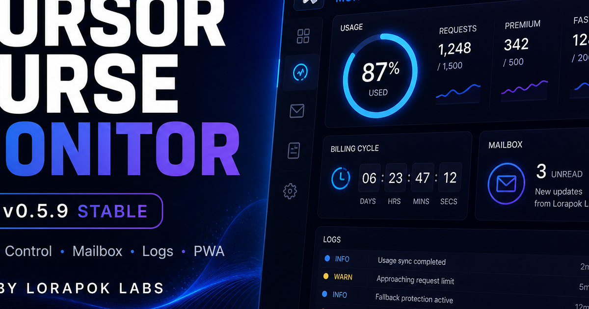

Live dashboard
Sidebar panel and status bar with auto-refresh from the Cursor API — no manual checking.
Live usage dashboard for Cursor IDE — included quota, billing cycle, on-demand spend, and automatic free fallback to Composer 2.5 (Fast off) when limits are crossed.
Why developers install it
Sidebar panel and status bar with auto-refresh from the Cursor API — no manual checking.

Set a personal USD limit, track on-demand spend, and get warned before you overshoot.

At 100% included usage, auto-switch to Composer 2.5 (Fast off) — the free slow pool.

Your auth token never leaves your machine. No telemetry, no shared team dashboard.
Product gallery
Marketing visuals for the extension — share them when you recommend Cursor Curse Monitor to your team.



Get started in minutes
Commands below update automatically from CI — always pointed at the latest release.
Search Extensions for:
lorapok-labs.cursor-curse-monitor-by-lorapokDownload — from the latest release, then run:
cursor --install-extension …For maintainers
Tag a version → GitHub Actions builds, publishes to Open VSX, and creates a release with the VSIX attached.
Bump version in package.json (or use script below)
Commit & push to main
Run release script — tags & deploys
./scripts/release.sh patch./scripts/release.sh minorgit tag v— && git push origin v—Site data last synced:
Trust
Author
Founder & Principal Engineer at Lorapok Labs · Senior Software Engineer at Shohoz Ltd
MIT licensed open source — contributions welcome on GitHub.